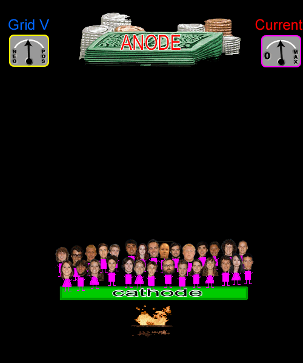

- Here is an analogy for a triode vacuum tube. Students are representing out electrons, and start out hanging out at the "cathode".
- Since they are students they don't really want to leave so we have to start a fire to get them moving. (this represents the actually heating of the cathode)
- They need something to move them all in the same direction, so we add a pile of money. (this represents the positive voltage of the anode)
- Note that there are meters at the top of the image to indicate voltage on control grid and current through tube
This animation you see when the page loads represents what happens with a diode or a triode with no voltage on the control grid.
- Click the "slightly negative" button to turn the tube into a triode and add a slightly negative voltage to the control grid.
- You will notice we have added something that the students don't like. In this case someone with a whip (this represents a negative voltage for the electrons). (for those who are not Recording Arts Majors, that is our production coordinator)
- This will slow the students (electrons) down so we have less current flow.
- Click the "very negative" button to add a very negative voltage to the control grid.
- We have added something the students like even less, a man with an ax. (for those who are not Recording Arts Majors, that is our department chair)
- This will slow the students (electrons) down even more so we have even less current flow.
- If we make the control grid voltage negative enough we reach cutoff. This means that it is not possible to decrease current flow below this amount. (more about this on page 12)
- Even though there is something scary on the way to the money, the students are still going there, just more slowly. (The electrons still go to the plate with a large negative voltage on the control grid, there is just less current flow.)
- We can also go the other direction and make the control grid positive. Click the "slightly pos" button to see this animation.
- We have added something on the way that the student like. You get a candy bar on the way to get your money. (this represents adding a slightly positive voltage to the control grid)
- That makes the students walk a little faster to the money. (we get more current flow)
- Click the "very positive" button to change the control grid to very positive.
- We are now giving the students something even better along the way to the money, a free laptop! (this represents a very positive voltage on the control grid)
- This makes them walk even faster. (we get even more current flow)
- If we make the control grid positive enough we reach saturation. This means that it is not possible to increase current flow through the tube beyond this amount.(more about this on page 12)